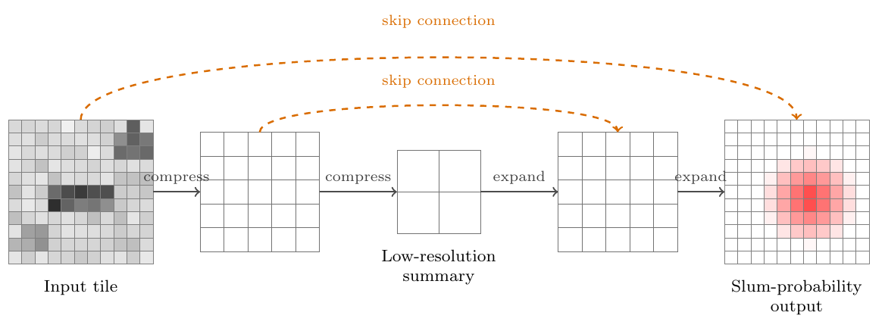
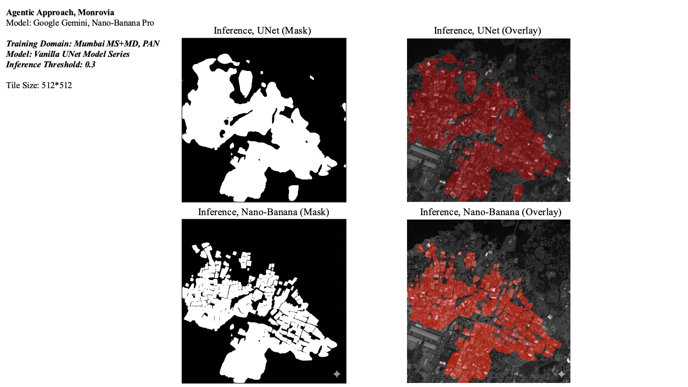
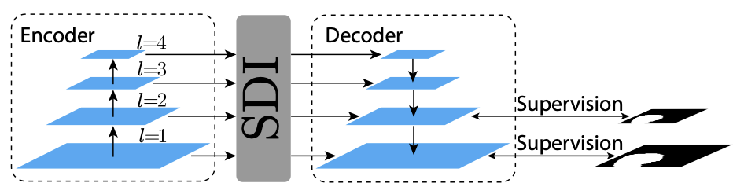
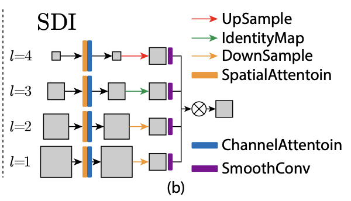
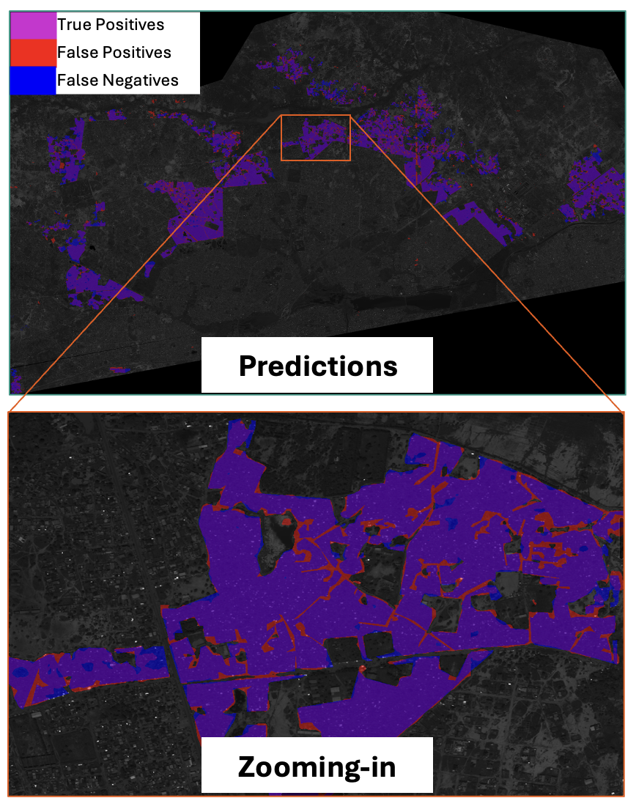
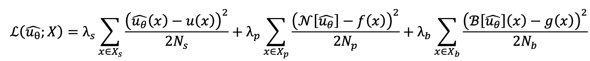
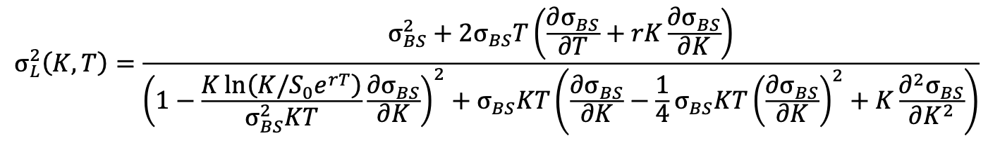
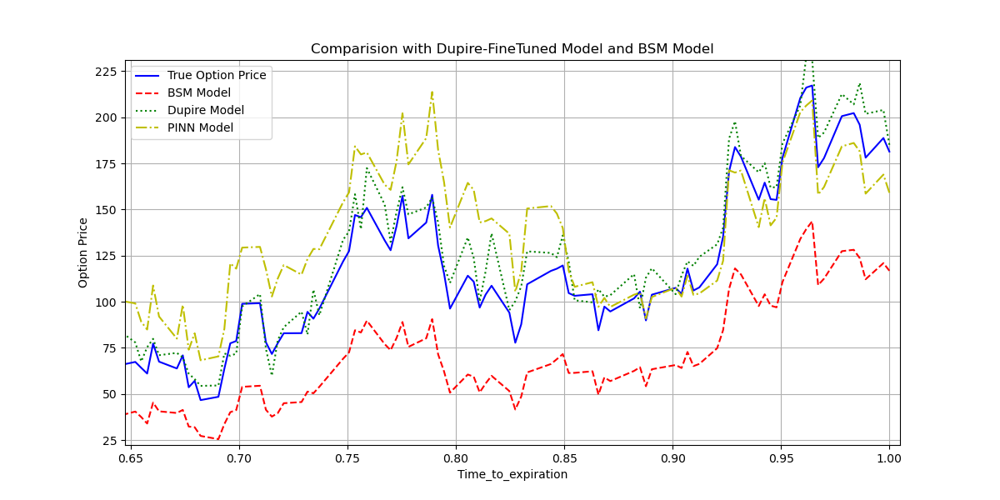

Technical Skills
- Programming: Python OOP, C++ OOP, AWS, PostgreSQL, MATLAB, Linux, Slurm, LaTeX, Stata, R Studio
- Topics: Research Platform Architecture, Machine Learning Infrastructure, Deep Learning, Credit & Derivatives Markets, Statistical Modeling & Econometrics, Time-Series Modeling
- Focus: AI & ML Infrastructure, High-Performance Systems, Evaluation Benchmarks
Professional Experience
- Qube Research & Technologies(QRT), Quantitative Technologist Intern – AI Engineering Track at systematic macro team (2026 summer).
- Neuberger Berman, Quantitative Researcher - University of Chicago Project Lab – Developed systematic machine-learning and regression models to assess global bond-market relative value and built automated Linux-based pipelines for macro and real-time bond data analysis.
- Huatai-PineBridge Fund, Quantitative Researcher Intern – Government Bond Futures Strategy. (Detailes NDA).
- Guotai Haitong (Jun'an) Securities, Quantitative Researcher Intern – Designed and backtested 3 factor-based alpha strategies on treasury bond futures, each with Sharpe ratio > 2.0. Built cluster-enhanced residual regression models to forecast fund duration, improving accuracy by 18%. Authored fixed-income hedge report reducing strategy drawdown by 8% (Q4 2022–Q1 2024).
Featured Publications & Projects
Slum Measurement using Manual and AI Methods
Project Details: Slum Measurement using Manual and AI Methods
Selected Architecture I: SDI-Enhanced ViT with Frozen DINOv3 Features

We design a ViT-based segmentation architecture augmented with stacked SDI blocks for semantic enhancement. In parallel, we incorporate frozen DINOv3 features as an auxiliary semantic signal, which are upsampled and fused at the decoder stage. This design decouples task-specific representation learning from pretrained multimodal priors, allowing the model to leverage high-level semantics while maintaining training stability.
Selected Architecture II: U-Net Anatomy

The U-Net baseline anchors the manual and AI measurement comparison, making the encoder-decoder structure and skip connections explicit before adding stronger pretrained and attention-based modules.
Selected Architecture III: Nano-Banana Inference Results & Vanilla U-Net

We incorporated Nano-Banana (Google DeepMind) into our informal settlement segmentation pipeline. The inference results highlight the promise of AI-oriented model families, with pretrained multimodal LLM–vision models demonstrating strong potential in both precision and segmentation granularity.
Selected Architecture IV: Attention U-Net v2 Architecture Overview

The SDI module aggregates encoder features across scales and selectively routes information into decoder stages for domain-adaptive feature fusion.

Spatial-channel attention with multi-scale down/upsampling and smoothing layers supports robust cross-domain adaptation. (Adapted from the SDI architecture originally proposed for medical image segmentation (Xiong et al., 2023). In this work, I extend SDI to the satellite-imagery domain and demonstrate its effectiveness under cross-region domain shift.)
The model structure is featured by a Transformer-based encoder and a multi-connection encoder–decoder bridge. Multi-level features extracted by the encoder are refined via the Semantics and Detail Infusion (SDI) module, which integrates high-level semantic information and low-level fine details using spatial–channel attention and a Hadamard product mechanism. Each feature level is enhanced by aligning resolutions across all levels and applying convolutional smoothing before fusion. The decoder reconstructs segmentation maps from the enriched multi-scale features, achieving higher accuracy with efficient FLOPs and GPU memory usage.
Selective Inference Results

Sample Inference Result

Dupire-PINN Option Pricing
Project Details: Dupire-PINN Option Pricing
Theoretical Framework
This project leverages Physics-Informed Neural Networks (PINNs) to solve the Dupire equation for local volatility. By embedding the Partial Differential Equation (PDE) directly into the loss function, the model learns solutions that are consistent with financial mathematics principles, bypassing the need for traditional grid-based methods.

The loss function is constructed as the collocation term (first term, validation results & real data point); PDE term (second term, validation results & PDE constraints) and Boundary term (third term, validation results & boundary constraints).

The core of the PINN is a neural network that approximates the option price C(S, K, T). The local volatility sigma=sigma(K, T) is also represented by a separate neural network. The total loss function is a composite of three main terms: Data Loss, PDE Loss (Physics Loss), and Boundary Condition Loss.
Here we presents the inference outcomes of our models on SPX call option data compared with the following models: 1. Pure BSM; 2. Pure PINN; 3. Real Data.

Kaggle AES Scoring (Silver Medal)
Kaggle DRW Crypto Prediction (Silver Medal)
Engineering & Research Philosophy
I don’t see machine learning as isolated model experiments — I try to approach it as an engineering discipline that is guided by research understanding. During my past years of infrastructure building journey, I care about building pipelines that are reproducible and grounded in data reality, where model design, dataset quality, evaluation, and failure-mode analysis evolve together instead of being treated as separate steps. What matters to me is whether a system continues to work as the problem and data change — scalable inference, automation, and closing the gap between research ideas and practical engineering outcomes.
Education
- The University of Chicago – M.S. in Financial Mathematics, Expected December 2026
- Shanghai University of Finance and Economics – Bachelor's Degree, Finance and Applied Mathematics (Double Major), June 2025
- University of California, Berkeley – Visiting Student in Applied Mathematics, December 2023
Languages & Interests
- Mandarin (native), Japanese (basic), Spanish (basic)
- Hiking, Piano, Marathon, Diving, Volunteer work